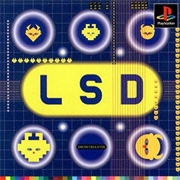

Persona 5 Royal – The Phantom Thieves’ Greatest Heist Yet
Platform(s): PS4, PS5, Nintendo Switch, Xbox Series X/S, PC
Developer: Atlus
Genre: JRPG, Social Simulation
Persona 5 Royal is the definitive edition of the original Persona 5, adding new story elements, characters, and gameplay improvements...
Few games can steal your heart quite like Persona 5 Royal. This expanded version of the 2017 JRPG classic takes
everything great about the original stylish turn-based combat, a gripping story, and a killer soundtrack and refines
it into an unforgettable experience. Whether you're a first-time player or an experienced player, Royal offers a journey
you won’t want to miss.
Why It’s Highly Recommended?
1. A Story of Rebellion and Redemption
You play as a high school student falsely accused of a crime and sent to Tokyo under probation. Soon after,
you awaken to the power of Persona, allowing you to battle in the Metaverse a distorted reality born from people’s
corrupted desires. As the leader of the Phantom Thieves, your mission is to change the hearts of the wicked and bring
justice to society.
2. A Visual & Musical Masterpiece
Few games can match Persona 5 Royal’s visual flair. Its bold colors, slick UI,
and anime-inspired character designs make every screen feel like a work of art. Even
navigating the menu looks cool.
Final Verdict
Persona 5 Royal is not just an upgrade it’s a masterpiece that enhances every aspect of the original. With a deeper story and refined gameplay, it’s
the best way to experience one of the greatest JRPGs of all time. Final Score: 10/10 – A Must-Play Are you ready to don the
mask and change the world? Let me know your favorite moments from Persona 5 Royal in the comments below!
RATING: ★★★★ (4/5)
- Suriao
Download Here

Stronghold: Definitive Edition – Most known for Castle-Building Strategy Games
Platform(s):Platform(s): Platform(s): PC (Wins 7/8/10/11 64 Bits)
Developer: FireFly Studios
Genre: City Builder, Strategy, Real-Time Tactics, Medieval
Stronghold: Definitive Edition is a masterfully remastered version of the classic 2001 medieval real-time strategy (RTS) game, bringing enhanced
visuals, improved gameplay mechanics, and modernized controls while preserving the charm and depth of the original. Developed by FireFly Studios,
this edition refines the castle-building,
warfare, and economic management elements
that made Stronghold a standout in the RTS genre.
Why It’s Highly Recommended?
1. Faithful Remaster with Modern Enhancements
Stronghold: Definitive Edition stays true to the original experience while introducing quality-of-life improvements,
such as smoother animations, improved pathfinding, and 4K visuals. These refinements make the game feel fresh without
losing its nostalgic appeal.
2. Deep and Engaging Gameplay
The game perfectly blends castle management, resource gathering, and strategic combat.
Players must carefully balance their economy, fortifications, and military forces to
withstand enemy sieges and expand their domain.
3. Remastered Campaign & Extra Content
The campaign has been fully remastered with updated visuals, voice acting, and additional
missions, offering both newcomers and veterans
a rewarding experience. The inclusion of classic and new scenarios adds replay value.
4. Multiplayer & AI Improvements
The game features revamped multiplayer capabilities, allowing players to compete or cooperate with others online. Enhanced
AI behavior also makes single-player skirmishes more dynamic and challenging.
5. Nostalgia Meets Accessibility
With its improved interface and smoother controls, the game is more accessible to modern audiences while
retaining the challenge and charm that long-time fans love.
Final Verdict
Stronghold: Definitive Edition successfully revitalizes a beloved classic with meaningful upgrades, making
it the best way to experience the game today. Whether you’re a long-time fan or a newcomer to medieval strategy games, this edition is
highly recommended for its engaging gameplay, strategic depth, and historical authenticity.
RATING: ★★★★ (5/5)
- Hemedez
Download Here

StarCraft
Platform(s): PC (Wins 7/8/10/11), MAC
Developer: Blizzard Studios
Genre: Strategy, Real-Time Tactics, Sci-Fi
StarCraft: Remastered takes the legendary 1998 real-time strategy game and enhances it with modern visuals,
updated audio, and seamless online functionality, all while preserving the core gameplay that made it an
esports phenomenon. Developed by Blizzard Entertainment, this remaster brings the war between the Terrans, Protoss,
and Zerg to life in stunning 4K resolution, with revamped cutscenes and improved unit animations. The classic campaigns
remain untouched, offering an epic sci-fi story filled with political intrigue, betrayals, and strategic warfare.
Why It’s Highly Recommended?
1. Modernized Graphics with Classic Feel
StarCraft: Remastered keeps the original’s gameplay intact while introducing crisp 4K visuals, detailed environments, and refined
unit models. The ability to switch between the old and new graphics at any time allows players to appreciate how far
the game has come while still feeling familiar.
2. Enhanced Online Experience
Unlike the original, which relied on outdated multiplayer systems, Remastered integrates with Blizzard’s
modern Battle.net platform. T
his brings smoother matchmaking, ranked ladders, and cloud saves, making it much easier to dive into
competitive matches.
3. Remastered Audio and UI Improvements
The game’s soundtrack, voiceovers, and sound effects have been enhanced, providing a richer
and more immersive experience. The updated UI makes navigation more intuitive, helping new players
adapt while keeping the challenge alive for veterans.
4.A Timeless Strategy with New Appeal
While StarCraft: Remastered remains true to its original mechanics, its refinements make
it feel fresh and engaging, especially for those unfamiliar with classic RTS games. Players who
enjoy deep strategy, resource management, and intense micro-control will find it a rewarding experience.
5. Perfect for Both Veterans and Newcomers
Longtime fans will appreciate the faithful restoration of a classic,
while new players can experience StarCraft in its best possible form. The
ability to experience one of the most influential RTS games with modernized features
makes this the definitive edition for all players.
Final Verdict
StarCraft: Remastered successfully bridges the gap between nostalgia and modern gaming, making it a must-play for RTS
enthusiasts and newcomers alike. With its polished visuals, enhanced online features, and timeless strategic depth, it offers a fresh
experience even for those who have never played StarCraft before. Whether you're a veteran reliving past battles or a new player seeking a
deep and rewarding RTS, StarCraft: Remastered is the best way to experience this classic.
RATING: ★★★★ (4/5)
- Hemedez
Download Here

LSD: Dream Emulator
Platform(s): PS 1
Developer: Asmik Ace
Genre: Action-adventure game
Released in 1998 for the PlayStation, LSD: Dream Emulator is an experimental, surreal exploration game that offers a truly one-of-a-kind experience.
Inspired by the dream journal of Hiroko Nishikawa, a member of the game's development team at Asmik Ace Entertainment,
the game transports players into a bizarre, ever-changing dream world.
Why It’s Highly Recommended?
1. Unique and Unpredictable Gameplay – Unlike traditional games, LSD: Dream Emulator has no set objectives or goals.
Instead, players navigate dreamlike environments that shift with each playthrough, ensuring that no two experiences
are the same.
2. Surreal and Absurd Atmosphere – The game is filled with strange, often unsettling imagery, ranging from floating eyeballs
to morphing landscapes. This unpredictable nature makes it an unforgettable trip into the subconscious.
3. Experimental and Artistic Value – It stands as a cult classic among fans of surreal and avant-garde gaming.
Its abstract world design and unconventional mechanics make it a fascinating experience for those interested in the
artistic potential of video games.
4. Replayability and Discovery – With over 365 in-game "dream days" to
explore, the game evolves over time, introducing new textures,
environments, and eerie encounters with each session.
5. Psychological and Emotional Impact – The dreamlike and sometimes nightmarish sequences can evoke deep emotions,
from nostalgia and curiosity to unease and wonder.
It’s an introspective journey unlike any other.
Final Verdict
While LSD: Dream Emulator may not be for everyone due to its lack of structure and often bizarre visuals,
those willing to embrace its dreamlike logic will find an unforgettable and mesmerizing experience.
RATING: ★★★★ (4/5)
- Duenas
Download Here

Fatal Frame II: Crimson Butterfly – The Scariest Game Ever Made
Platform(s): PS2, PS3, Xbox
Developer: Tecmo
Genre: Survival horror, Action-adventure game, Puzzle
Fatal Frame II: Crimson Butterfly is a survival horror game developed by Tecmo and released in 2003 for the
PlayStation 2. The game follows twin sisters Mio and Mayu Amakura, who become trapped in the mysterious Minakami Village,
a place cursed by a horrifying ritual. Armed only with the Camera Obscura, a mystical device capable of capturing spirits,
they must uncover the village’s dark secrets and escape before they, too, become victims of its fate.
Why It’s the Best Entry for New Players
1. A Standalone, Accessible Story – Unlike some horror series with complicated lore, Fatal Frame II presents
a self-contained narrative that newcomers can fully appreciate without prior experience. The emotional bond between
Mio and Mayu adds depth, making it more than just a ghost story.
2. Refined Gameplay Mechanics – The game improves upon the original Fatal Frame with smoother movement,
refined Camera Obscura mechanics, and better controls, making it more accessible for first-time players.
3. Deeply Immersive Horror – Minakami Village is one of the most haunting settings in horror gaming. Its eerie sound
design, unsettling visuals, and chilling ghost encounters create an intense atmosphere that
lingers even after you stop playing.
4. Balanced Difficulty – While terrifying, the game isn’t overly punishing.
The challenge level is fair, allowing players to gradually learn how to combat ghosts using
the Camera Obscura without excessive frustration.
5. Multiple Endings & Replayability – Different choices lead to multiple endings,
making it worth replaying. Hidden lore and unlockable content also encourage
further exploration.
Final Verdict
With its compelling story, haunting atmosphere, and refined gameplay, Fatal Frame II: Crimson Butterfly is the ideal entry point
for players new to the series. It offers a deeply immersive and unforgettable horror experience that balances tension, fear, and
storytelling masterfully. Whether you're a horror fan or new to the genre, this game is a must-play.
RATING: ★★★★ (4/5)
- Duenas
Download Here

S.T.A.L.K.E.R.: Shadow of Chernobyl
Platforms: PC (Microsoft Windows)
Developer: GSC Game World
Genre: First-person shooter, Survival horror, Open-world, Role-playing
S.T.A.L.K.E.R.: Shadow of Chernobyl is a first-person shooter survival horror game developed by GSC Game World and released in 2007.
Set in an alternate reality where a second disaster occurs in the Chernobyl Exclusion Zone, the game immerses players
in a radioactive wasteland filled with anomalies, mutated creatures, and rival factions. Players assume the role of the "Marked One," an
amnesiac stalker seeking to uncover his identity while
navigating the treacherous Zone.
Why It’s the Best Entry for New Players
1. Gameplay and Features
The game combines first-person shooting mechanics with role-playing elements, allowing players to engage in combat, trade with NPCs,
and undertake various quests. The open-world environment is segmented into 18 distinct areas, each offering unique challenges and atmospheric
designs. A dynamic weather system and day-night cycles enhance the immersive experience, while the A-Life artificial intelligence system ensures
that NPCs and creatures exhibit realistic behaviors independent of player actions.
2. Critical Reception
Upon release, S.T.A.L.K.E.R.: Shadow of Chernobyl received generally positive reviews, with critics praising its atmospheric
setting and depth. GameSpot lauded it as "one of the scariest games on the PC," highlighting its post-apocalyptic environment.
However, the game was also criticized for technical issues, including numerous bugs and performance problems. IGN noted that the game
"tended to stutter quite often," affecting the overall experience.
Final Verdict
S.T.A.L.K.E.R.: Shadow of Chernobyl offers a deeply immersive experience that stands out in the survival horror genre. Its
richly detailed world and challenging gameplay provide a rewarding journey for those willing to navigate its complexities. While technical
shortcomings and a steep difficulty curve may deter some players, the game's
atmospheric brilliance and innovative mechanics make it a noteworthy title worth exploring
RATING: ★★★★ (4/5)
- Nuyda
Download Here

S.T.A.L.K.E.R.: Shadow of Chernobyl
Platforms: PlayStation 4
Developer: Naughty Dog
Genre: Action-adventure, Survival horror
The Last of Us Remastered is an enhanced version of the critically acclaimed 2013 action-adventure game developed by Naughty Dog.
Released on July 29, 2014, for the PlayStation 4, this remastered edition offers improved graphics, higher resolution, and smoother
frame rates, enhancing the immersive experience of the post-apocalyptic narrative.
Gameplay and Features
1.The game combines action-adventure elements with survival horror themes, focusing on stealth, exploration,
and combat. Players control Joel, a smuggler tasked with escorting a teenage girl named Ellie across a post-apocalyptic United
States. The remastered edition features enhanced graphics, including higher resolution character models and improved lighting,
as well as a photo mode that allows players to capture in-game moments. It also includes the "Left Behind" downloadable content, which
explores Ellie's backstory, and introduces new multiplayer maps and modes.
2. Critical Reception
Upon release, The Last of Us Remastered received universal acclaim. On Metacritic, it holds a
Metascore of 95 out of 100, based on 70 critic reviews, and a user score of 9.2 out of 10, reflecting
over 20,000 user ratings.Critics praised the game's storytelling, character development, and visual enhancements.
Game Revolution described it as "a masterpiece," highlighting its compelling narrative and refined gameplay. DarkStation
echoed this sentiment, stating that the remastered edition brings "the harrowing adventure to a whole new generation with
expert style."
Final Verdict
The Last of Us Remastered elevates an already exceptional game, delivering an emotionally charged story and refined gameplay that
continues to resonate with players. Its critical acclaim and enduring popularity underscore its status as a must-play title for any
gaming enthusiast.
RATING: ★★★★★ (5/5)
- Nuyda
Download Here

Silent Hill: The Short Message
Platforms: PlayStation 5
Developer: Konami Digital Entertainment
Genre: Psychological Horror
Silent Hill: The Short Message is a free-to-play psychological horror game that attempts to bring the franchise into a more modern
setting while tackling serious themes like cyberbullying and self-harm. While the game introduces some interesting ideas, its execution
leaves much to be desired.
Story & Themes
1.The narrative has potential, with dark, heavy themes that could have been truly impactful. However, the game delivers its message with zero subtlety, making it feel forced rather than thought-provoking. Silent Hill is known for its psychological depth and ambiguity, but here, everything is spoon-fed to the player. There’s no room for interpretation—just a constant barrage of heavy-handed storytelling that doesn’t trust the audience to think for themselves.
The dialogue is also a major weak point. The writing feels unnatural, and the characters, particularly the protagonist, don’t speak like real teenagers. It’s as if the writers had never actually spoken to one. This disconnect makes it hard to connect with the cast or take the emotional weight of the story seriously.
Gameplay & Mechanics
>even if you follow the exact path you’re supposed to take. There’s no real strategy—just trial and error until the game decides to let you pass. It’s frustrating, not scary.
The first-person perspective was an interesting choice, but without any meaningful mechanics, it just makes the game feel like yet another generic walking simulator. There are also live-action segments sprinkled in, which don’t add much and only serve to make the experience feel like a poorly executed TV drama.
One of the game’s stronger aspects is its environmental design. The abandoned apartment complex is eerie and visually reminiscent of classic Silent Hill locations while still having its own identity. The grimy, claustrophobic hallways, flickering lights, and distorted reality shifts do a great job of setting an unsettling tone.
Unfortunately, a cool setting alone can’t save a game.
Final Verdict
Silent Hill: The Short Message had the potential to be something great, but it stumbles in nearly every way. The story is over-explained, the dialogue is awkward, and the gameplay is frustratingly shallow. The setting is well-crafted, but it’s not enough to carry the experience. Even though the game is free, it still feels like a waste of time.
RATING: ★★★ (3/5)
- Paulmitan
Download Here

valorant
Platforms: PC (Windows)
Developer: Riot Games
Genre: First-Person Shooter (FPS), Tactical Shooter
Valorant is a free-to-play tactical FPS developed by Riot Games. It combines precise gunplay with unique agent abilities, requiring strategy, teamwork, and skill. The game features 5v5 matches where players plant or defuse the Spike, similar to CS:GO but with hero-based mechanics. Known for its competitive gameplay and strong esports presence, Valorant is one of the most popular shooters today.
Why Is It Highly Recommended?
1.Valorant stands out due to its blend of precise gunplay and unique agent abilities, creating a dynamic and strategic experience. The game demands teamwork, communication, and quick decision-making, making every match intense and rewarding. Riot Games provides consistent updates, balancing changes, and new content to keep the gameplay fresh. With a thriving esports scene, competitive matchmaking, and an active player base, Valorant continues to be one of the most engaging and competitive FPS games available today.
Final Verdict
A must-play for FPS fans who enjoy tactical team-based gameplay with hero abilities.
RATING: ★★★★★ (5/5)
- Tequillo
Download Here

GTA5
Platforms: PC, PlayStation (PS3, PS4, PS5), Xbox (360, One, Series X/S)
Developer: Rockstar Games
Genre: Open-World, Action-Adventure
GTA 5 is an open-world action game by Rockstar Games where players control three criminals navigating a crime-filled Los Santos. It features an engaging story, diverse missions, and an expansive online mode, making it one of the most successful and entertaining games ever.
Why Is It Highly Recommended?
1.GTA 5 offers a vast open world filled with endless activities, from heists and car chases to side missions and an immersive story. The game’s three-protagonist system adds depth, allowing players to experience different perspectives. GTA Online extends the game’s lifespan with multiplayer content, including businesses, races, and heists. With stunning visuals, a gripping narrative, and frequent updates, it remains one of the best-selling and most played games in history.
Final Verdict
A masterpiece that blends action, storytelling, and open-world freedom, offering countless hours of entertainment.
RATING: ★★★★★ (5/5)
- Tequillo
Download Here